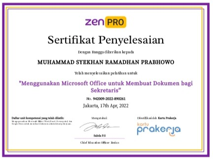
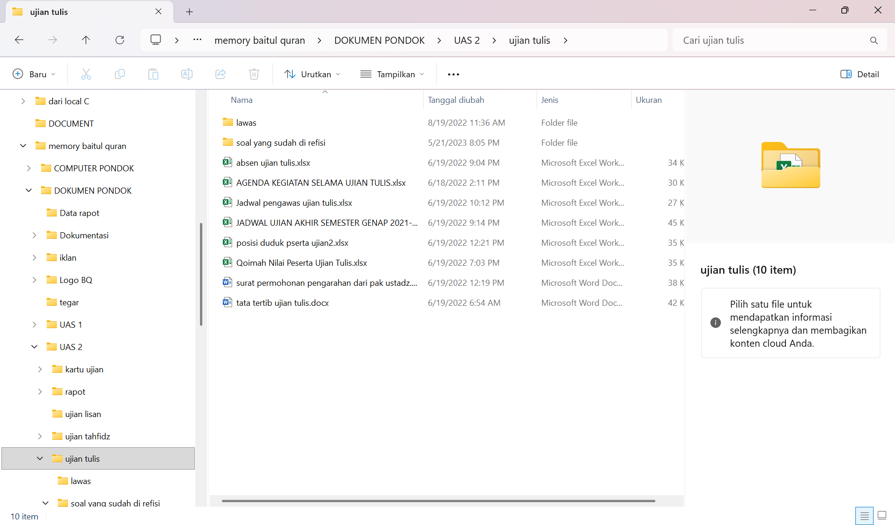
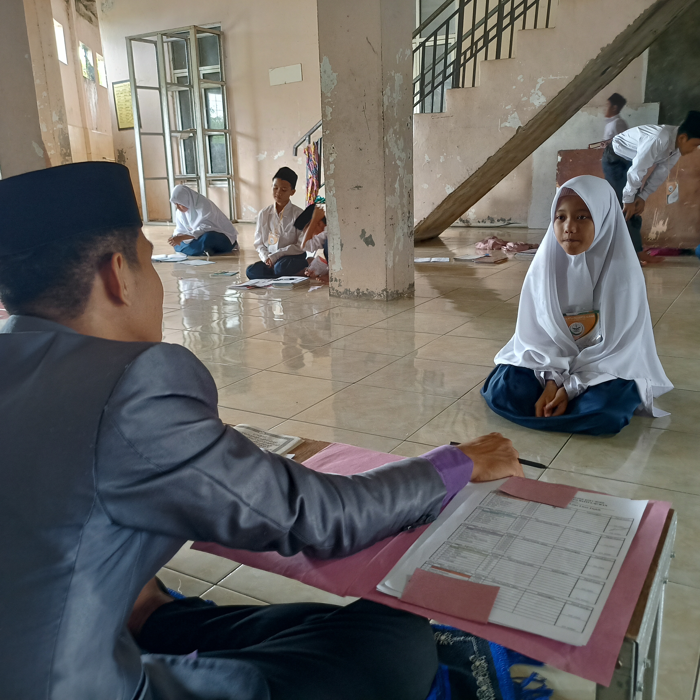
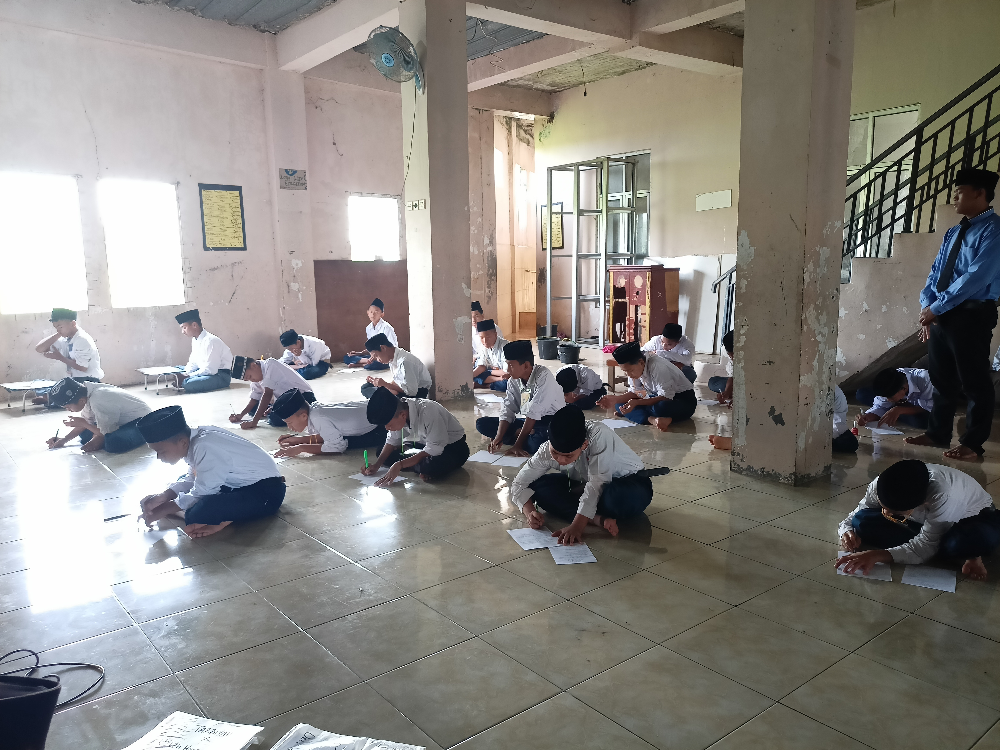

Syekhan Ramadhan
Mahasiswa
Informatika-Unilam


Apa kabar
Ya, ini halaman portofolio saya
Perkenalkan, saya seorang Mahasiswa dari unnversitas Latansa Mashiro Lebak. Fakultas yang Saya pilih adalah teknologi informasi,
prodi informatika. Di sana saya mempelajari tentang pengolahan data pada komputer melalui proses logika.
Menariknya lulusan dari Jurusan Teknik Informatika sangat dicari dan dibutuhkan oleh segala jenis perusahaan.
Portofolio ini adalah tugas dari mata kuliah Pemrograman Berbasis Web pertemuan ke-4.
saya membuat ini lebih dari 3 jam karena kemampuan saya yang masih terbatas.saya sangat menghargai siapa saja yang
membaca dan memberi masukan di sini.
KEAHLIAN
1. MEMAHAMI UI & UX

2. MENGGUNAKAN MICROSOFT OFFICE UNTUK MEMBUAT DOKUMEN BAGI SEKERTARIS

PENGALAMAN
1. WAKIL PANITIA UJIAN SEKOLAH PESNTREN TINGKAT MTS & MA SELAMA 3 SEMESTER


